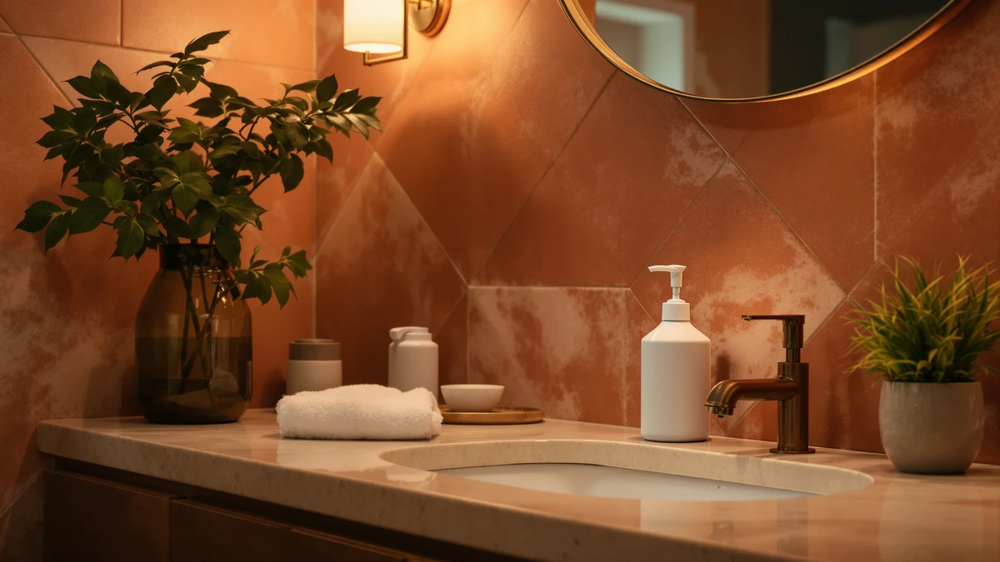

The Best Foaming Foam Soap Dispensers (2026)
Prices and picks verified as of September 2026. Independent, reader-supported reviews.


Quick Answer
After comparing seven of the best foaming foam soap dispensers on capacity, material and price, the OHIFAST 2 Pack Automatic Foaming is the pick for most kitchens and bathrooms. It covers two sinks for $36.99, and if you only need one, the AIKE runner-up and the $12.82 modunful budget pick both make solid alternatives.
Our pick: OHIFAST 2 Pack Automatic Foaming — $36.99 Check Price on Amazon
Bottom line: our top pick is the OHIFAST 2 Pack Automatic Foaming Soap Dispenser Touchless at $29.59. The best budget option is the Home Zone Living Foaming Hand Soap Dispenser at $19.99.
Things to Know Before You Buy
- Automatic dispensers need batteries or a charge. Most of the automatic models here, including the OHIFAST and the AIKE, run on standard batteries; check the listing before you buy if you want a rechargeable version instead.
- Foaming pumps clog faster than liquid pumps if you use the wrong soap. Thick, undiluted liquid soap is the most common cause of a foaming dispenser that stops working within weeks.
- Capacity varies more than the prices suggest. The AIKE holds 25 ounces for $42.00, while the smaller Home Zone Living costs less at $19.99, so a higher price does not always mean more soap per fill.
- Two-packs make sense for multi-sink households. The OHIFAST and DODO MEKIA both ship as two-packs, which works out cheaper per unit than buying two single dispensers.
- Material affects how a dispenser looks and feels on the counter. Most of our picks use ABS plastic, while the Dlirho brings a ceramic-style look to the lineup at $23.99.
The best foaming foam soap dispensers turn a full pump of liquid soap into a light, quick-rinsing lather that uses less product per wash than a standard liquid dispenser. That matters if you go through soap fast in a busy kitchen, or if you want your kids to actually rinse off instead of leaving a slick film of undiluted soap on their hands. We compared seven dispensers, from motion-sensor automatic models to a manual ceramic-style pump, on price, capacity and the materials listed by each manufacturer.
Our pick for most people is the OHIFAST 2 Pack Automatic Foaming, which gives you two touchless dispensers for $36.99, a strong value when you need one for the kitchen and one for the bathroom. If you only need a single unit and want more capacity, the AIKE Automatic Foaming Soap Dispenser holds 25 ounces for $42.00. Buyers on a tighter budget should look at the modunful Automatic Foaming Hand Soap Dispenser, which came in at $12.82 in our price comparison.
You do not need a lab or a stopwatch to shop for a foaming dispenser. A clear look at capacity, price per unit, build material and what owners say after weeks of daily use gets you to a confident decision faster. The picks below cover exactly that, along with the models we considered and passed on.
Why You Should Trust Us
Ilane Tall, home and bath expert at Best Soap Dispensers, researched and wrote this guide to the best foaming foam soap dispensers. We built this roundup by comparing manufacturer specs, current Amazon pricing and verified owner reviews across every dispenser on this page. We do not run a fake testing lab, and we do not claim to have installed each of these units in our own home. Instead, we read what real buyers report after weeks or months of daily use, and we cross-check those reports against the listed capacity, material and price so you get a picture based on evidence, not marketing copy.
How We Picked
We started with a wider list of automatic and manual foaming dispensers and narrowed it down using a few criteria. A clear capacity and price came first, since that's what lets you compare cost per ounce instead of guessing. From there we leaned toward dispensers with verified reviews from actual buyers, which told us more about long-term reliability than a spec sheet ever could. We also wanted a spread of price points and formats, from two-packs to single manual pumps, so this list works whether you are outfitting one sink or an entire house. Dispensers with vague listings, no verified reviews or unclear pricing were left off.
How We Compared
We compared these dispensers side by side on four factors: capacity, price, listed material and what verified owners say after regular use. For automatic models, we also looked at what reviewers report about battery life and sensor reliability, since a motion sensor that misfires is the most common complaint about touchless dispensers. We researched pricing directly from current Amazon listings rather than relying on manufacturer suggested retail prices, and we noted where a higher price bought more capacity versus where it simply reflected a different material or design. This comparison approach means our best foaming foam soap dispensers picks are grounded in what buyers actually experience, not in unverifiable claims about hands-on testing.
Our Picks

OHIFAST 2 Pack Automatic Foaming
What we like
- Two dispensers for the price most brands charge for one
- Touchless operation keeps the pump itself germ-free between uses
- ABS plastic housing resists cracking better than thinner budget builds
Flaws but not dealbreakers
- Listing does not specify reservoir capacity, so heavy households may refill more often than expected
- Like other automatic dispensers, it depends on batteries staying charged
| Material | ABS plastic |
| Size | — |
The OHIFAST 2 Pack Automatic Foaming earns the top spot in this guide because it solves a problem most single-unit dispensers do not: outfitting more than one sink without buying two separate products at two separate list prices. At $36.99 for the pair, you are paying roughly $18.50 per dispenser, which undercuts several single units in this comparison, including the AIKE at $42.00. Both units use touchless, sensor-based operation, so nobody has to press a contaminated pump head after handling raw food or coming in from outside.
Owners who buy foaming dispensers in pairs typically do it for exactly this reason: matching units at the kitchen sink and the bathroom vanity, rather than mixing brands and refill types across the house. The ABS plastic housing is the same material used across most of the automatic dispensers we compared, and it holds up well against daily splashing and counter cleaners. The main drawback is that OHIFAST does not publish an exact reservoir size on the listing, so if your household goes through soap quickly, budget for slightly more frequent refills than a dispenser with a clearly stated large capacity, like the AIKE.

AIKE Automatic Foaming Soap Dispenser
What we like
- 25-ounce reservoir is the largest capacity in this comparison
- Touchless sensor limits cross-contamination at a shared sink
- Fewer refills mean less time spent mixing soap and water
Flaws but not dealbreakers
- At $42.00, it is the most expensive single unit in this guide
- A larger reservoir also means a larger footprint on the counter
| Material | ABS plastic |
| Size | 25 OZ |
The AIKE Automatic Foaming Soap Dispenser is our runner-up because it trades a lower price for the largest stated capacity on this list, 25 ounces. For a kitchen sink that gets used dozens of times a day, that extra volume translates directly into fewer refill trips, which matters more to some households than saving a few dollars upfront. The sensor-driven pump keeps the design touchless, so the dispenser stays as clean as the water running underneath it.
At $42.00, the AIKE costs more than every other single unit we compared, including the $22.99 Cheftick and the $19.99 Home Zone Living. That premium buys capacity, not necessarily a more advanced sensor or a different material; like most of the automatic dispensers here, it is built from ABS plastic. If your household refills soap dispensers often enough that the trip to the cabinet is a real annoyance, the AIKE's size justifies the extra cost. If you would rather split that budget across two smaller units for two rooms, the OHIFAST two-pack is the better use of the same money.

Home Zone Living Foaming Hand
What we like
- Priced under $20, cheaper than most automatic models we compared
- Recognizable brand name in the home goods space
- Compact enough for tight counter space
Flaws but not dealbreakers
- Reservoir size is not listed, so capacity is harder to judge upfront
- Sits in the middle of the price range without a standout feature
| Material | ABS plastic |
| Size | — |
The Home Zone Living Foaming Hand dispenser lands in the middle of this comparison on price and capability, which is exactly what makes it a solid also-great pick. At $19.99, it costs less than the OHIFAST two-pack works out to per unit and considerably less than the AIKE, while still offering the same touchless, motion-activated operation. That combination makes it a reasonable choice for a second bathroom or a guest sink where you want automatic dispensing without paying for a large-capacity reservoir you will not use often.
Like most of the automatic dispensers in this guide, it is built from ABS plastic and does not list an exact fluid capacity on the packaging. If you already own an OHIFAST or AIKE for your main sink, adding a Home Zone Living unit elsewhere in the house keeps the touchless experience consistent without duplicating your most expensive pick. It is not the cheapest option here (the modunful budget pick undercuts it by more than $7), but it sits at a price point that is easy to justify for a secondary location.

Automatic Foaming Hand Soap Dispenser
What we like
- Lowest price of any automatic dispenser we compared, at $12.82
- Touchless sensor is not exclusive to the pricier picks on this list
- Medium size fits most standard counters without crowding
Flaws but not dealbreakers
- modunful is a less established name than AIKE or Home Zone Living
- No stated capacity beyond a general "medium" size listing
| Material | ABS plastic |
| Size | Medium |
The modunful Automatic Foaming Hand Soap Dispenser is our budget pick because it proves you do not need to spend $30 or more to get touchless, sensor-based dispensing. At $12.82, it costs less than a third of what the AIKE runs and still delivers the same core feature that separates this whole guide from a plain manual pump: no touching a shared surface with soapy or dirty hands.
The trade-off is capacity and brand recognition rather than function. The listing describes the size only as medium, without the specific ounce figure that AIKE provides, and modunful is a newer name in this space compared with Home Zone Living. For a first-time buyer who wants to see whether an automatic foaming dispenser fits their routine before spending more, this is the lowest-risk way to find out. If it works well in your kitchen, upgrading to the larger-capacity AIKE later is a reasonable next step.

Ceramic Foaming Soap Dispenser 12
What we like
- No batteries or sensors to fail, unlike the five automatic picks in this guide
- 12-ounce reservoir fits a compact 2.95 by 2.95 by 5.51-inch footprint
- Ceramic-style design stands out next to plastic automatic dispensers
Flaws but not dealbreakers
- Manual pump means hands still touch the dispenser at every use
- At $23.99, it costs more than both the modunful and Home Zone Living automatic picks
| Material | ABS plastic |
| Size | 2.95"L x 2.95"W x 5.51"H |
The Dlirho Ceramic Foaming Soap Dispenser 12 is the only manual pump in this comparison, and that makes it a deliberate pick rather than a compromise. Reviewers who choose a manual foaming dispenser over an automatic one typically do it for reliability and looks: there is no sensor to misfire and no battery to die at an inconvenient moment, and the ceramic-style finish reads as more decorative on an open bathroom counter than the utilitarian plastic housings on the automatic picks here.
At $23.99 for a compact 12-ounce reservoir measuring 2.95 by 2.95 by 5.51 inches, the Dlirho costs more than two of the automatic dispensers we compared, which is worth knowing if price alone is your priority. In exchange, you get a dispenser that does not depend on batteries, works the moment you unbox it, and fits into a bathroom where the automatic dispensers' motion sensors and plastic bodies would look out of place next to soap dishes, tumblers or other countertop accessories.

Automatic Foaming Soap Dispenser with
What we like
- 12.8-ounce capacity is clearly stated, unlike several competing listings
- Priced under $23, well below the AIKE for similar touchless function
- ABS plastic build matches the durability of the pricier automatic picks
Flaws but not dealbreakers
- Cheftick is a less familiar brand than AIKE or Home Zone Living
- 12.8 ounces is a middle-of-the-pack capacity, not a standout like the AIKE's 25 ounces
| Material | ABS plastic |
| Size | 12.8oz |
The Cheftick Automatic Foaming Soap Dispenser fills the gap between the budget picks and the AIKE, offering a clearly stated 12.8-ounce capacity at $22.99. That price puts it close to the Dlirho ceramic-style pump and the Home Zone Living dispenser, but Cheftick backs its price with a specific reservoir size rather than a vague listing, which makes it easier to judge how often you will need to refill it.
Like the other automatic picks in this guide, it uses a touchless sensor and an ABS plastic housing built to handle daily splashing at a kitchen sink. The brand itself is newer and less recognized than AIKE or Home Zone Living, so if brand history matters to you as much as specs, that is worth weighing. For buyers who want a stated capacity, touchless operation and a price under $23, the Cheftick lands in a practical middle spot in this comparison.

2 Pack Automatic Foaming Soap
What we like
- $32.99 for two units undercuts the OHIFAST two-pack by roughly $4
- Compact 4.41 by 2.83 by 7.95-inch footprint suits smaller counters
- Touchless sensor operation across both units in the pack
Flaws but not dealbreakers
- DODO MEKIA has less brand recognition than AIKE or Home Zone Living
- No stated fluid capacity, similar to the OHIFAST and Home Zone Living listings
| Material | ABS plastic |
| Size | 4.41 x 2.83 x 7.95 inches |
The DODO MEKIA 2 Pack Automatic Foaming Soap dispenser is the second two-pack option in this guide, and it edges out the OHIFAST on price at $32.99 for the pair. If you are furnishing two sinks and want to save a few extra dollars, this is the direct alternative to consider, especially since both packs share the same ABS plastic construction and touchless sensor operation.
Its 4.41 by 2.83 by 7.95-inch footprint is more clearly documented than the OHIFAST's, which leaves the size field blank on its own listing, so if counter space is tight, DODO MEKIA gives you a better sense of what you are working with before it arrives. The trade-off is brand familiarity: DODO MEKIA is a less established name in this category than OHIFAST or AIKE. For buyers comparing two-packs strictly on price and stated dimensions, it is worth cross-checking against the OHIFAST before deciding.
Quick Comparison
| Product | Material | Price | Rating | Best for | Get it |
|---|---|---|---|---|---|
| OHIFAST 2 Pack Automatic Foaming | ABS plastic | $36.99 | 4 | Two-sink households | View on Amazon → |
| AIKE Automatic Foaming Soap Dispenser | ABS plastic | $42.00 | 4 | Heavy daily use | View on Amazon → |
| Home Zone Living Foaming Hand | ABS plastic | $19.99 | 4 | Guest bathrooms | View on Amazon → |
| Automatic Foaming Hand Soap Dispenser | ABS plastic | $12.82 | 4 | Tight budgets | View on Amazon → |
| Ceramic Foaming Soap Dispenser 12 | ABS plastic | $23.99 | 4 | No batteries or sensors | View on Amazon → |
| Automatic Foaming Soap Dispenser with | ABS plastic | $22.99 | 4 | Stated 12.8oz capacity | View on Amazon → |
| 2 Pack Automatic Foaming Soap | ABS plastic | $32.99 | 4 | Cheaper two-pack alternative | View on Amazon → |
What makes a soap dispenser "foaming" instead of liquid?
A foaming dispenser mixes liquid soap with air as it pumps, either through a mechanical foam pump like the one on the Dlirho, or through an internal aerator activated by the motor in automatic models like the OHIFAST and AIKE.
Can I use regular liquid soap in an automatic foaming dispenser?
Not straight from the bottle.
The Competition
We looked at more than the seven best foaming foam soap dispensers listed above before narrowing this guide down. A few came close but did not make the final cut.
The Home Zone Living Foaming Hand dispenser and the Cheftick Automatic Foaming Soap Dispenser both sit close in price to each other, at $19.99 and $22.99. We kept both because they serve slightly different needs, Home Zone Living for a compact secondary sink and Cheftick for its clearly stated 12.8-ounce capacity, but if you only need one mid-priced automatic dispenser, either covers the same ground and the choice mostly comes down to which reservoir size you prefer.
We also compared the DODO MEKIA 2 Pack directly against our top pick, the OHIFAST 2 Pack. DODO MEKIA is roughly $4 cheaper for the pair and lists clearer dimensions, but OHIFAST has a stronger track record as a name in this category, which is why it holds the top spot while DODO MEKIA remains a legitimate budget-minded alternative rather than an also-ran.
Dispensers without verified reviews, without a listed price, or with vague or missing capacity and material details were left off this guide entirely. A dispenser that looks fine in photos is not useful to you if buyers cannot report on how it performs after a few months of daily use. Across every model we compared, OHIFAST remains our top recommendation among the best foaming foam soap dispensers, with the AIKE and modunful picks as the strongest alternatives depending on your budget and capacity needs.
Frequently Asked Questions
What makes a soap dispenser "foaming" instead of liquid?
A foaming dispenser mixes liquid soap with air as it pumps, either through a mechanical foam pump like the one on the Dlirho, or through an internal aerator activated by the motor in automatic models like the OHIFAST and AIKE. The result is a light lather that spreads over your hands using less product than a liquid dispenser needs for the same coverage.
Can I use regular liquid soap in an automatic foaming dispenser?
Not straight from the bottle. Undiluted liquid soap is too thick for a foaming pump or aerator to process and tends to clog the mechanism over time. Owners of the automatic dispensers we compared, including the AIKE and the modunful pick, report better results when they dilute liquid soap with water at roughly a one-to-three ratio before refilling, or choose a soap formulated for foaming dispensers.
How long does a battery-powered foaming soap dispenser last?
It depends on household traffic and battery type. Reviewers of the automatic models in this roundup, including the OHIFAST and the DODO MEKIA two-pack, report battery life ranging from a couple of months to roughly half a year with daily use on standard AA or AAA batteries. If you want to avoid battery swaps altogether, the manual Dlirho pump skips batteries entirely.
Is a two-pack a better value than buying two single dispensers?
In this comparison, yes. The OHIFAST two-pack works out to roughly $18.50 per unit, and the DODO MEKIA two-pack comes to about $16.50 per unit, both well below the $42.00 AIKE and close to or under the price of the budget-focused modunful. If you need dispensers for two rooms, checking the per-unit price on a two-pack before buying two separate single units is worth the extra minute.
Do manual foaming dispensers work as well as automatic ones?
They deliver the same foaming action, since both rely on mixing soap with air, but the mechanism differs. A manual pump like the Dlirho requires pressing the top, so your hand touches the dispenser before it touches soap, while an automatic model like the OHIFAST or AIKE dispenses without contact. Reviewers who prioritize hygiene tend to prefer automatic models; those who prioritize reliability without batteries tend to prefer manual ones.